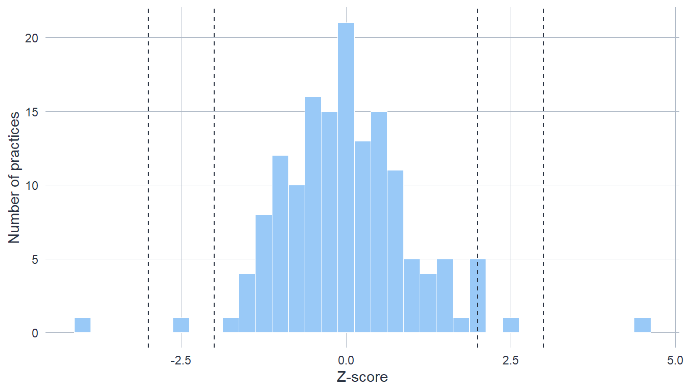
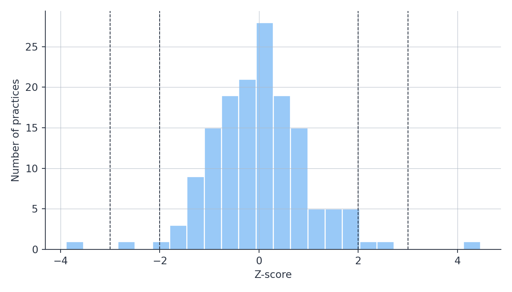

![A bell curve of the standard normal distribution with vertical dashed lines at z equals minus 3, minus 2, minus 1, plus 1, plus 2, and plus 3. The central region within plus or minus 1 is shaded darkest and labelled 68.2%. The bands between 1 and 2 standard deviations on either side are labelled 13.6% each. The bands between 2 and 3 are labelled 2.1% each, and the tails beyond plus or minus 3 are labelled 0.15% each. The further from the centre, the smaller the share of providers expected there by chance.](12-z-scoring_files/figure-html/fig-zscore-bands-1.png)
12 Comparing Provider Performance: Z-scoring
12.1 What a Z-score Measures
A z-score answers one question: how far does this provider’s value sit from what you would expect, relative to the spread of values around that expectation? The general formula, in the notation of CQC’s own z-scoring guidance, is
\[z = \frac{y - t}{s}\]
where \(y\) is the provider’s observed value, \(t\) is the expected value of the indicator – usually the national mean across all providers, occasionally an externally derived target – and \(s\) is the standard deviation of the values around that expectation. Subtract the expected value from the provider’s value, then divide by the standard deviation: the result is the provider’s distance from expectation, expressed in standard deviations rather than in the indicator’s original units.
That change of units is the whole point, and it buys you two things. First, a common scale: waiting times in hours, incident rates per thousand bed-days, and screening percentages all become directly comparable once each is expressed as standardised distance, which is why one set of bands can serve hundreds of indicators. Second, a sense of how unusual a value is: z-scores have mean 0 and standard deviation 1 by construction, and when the underlying data are roughly normal, the familiar landmarks of the normal distribution apply – about 68 per cent of providers within ±1, about 95 per cent within ±2, almost all within ±3. A provider at \(z = +2.5\) is not just “above average”; if nothing truly distinguished the providers, fewer than 1 in 100 would sit this far above the mean by chance.
It is worth being precise about what kind of statement that is. At its heart a z-score is descriptive: it locates a provider within the spread of all providers, nothing more. Whether the distance is statistically significant, and whether it matters in practice, are two further questions the z-score does not answer on its own – the section on distance, significance, and importance keeps the three apart. CQC has used z-scoring for provider comparison since the early 2010s, and it has endured for practical rather than aesthetic reasons: it is simple, explainable (“three standard deviations from the mean” lands with stakeholders in a way model output does not), it scales to thousands of providers, and a good-enough method consistently applied and widely understood usually beats a perfect method inconsistently used. CQC has also learned where it falls short – hence the minimum requirements and Working z-scores covered below.
The bands CQC uses
CQC reads z-scores through bands. The labels describe how far a provider sits from the expected value – they are a descriptive scale of distance, not a graduated scale of statistical confidence:
| Z-score range | Band label | What the evidence supports |
|---|---|---|
| z ≤ −3 | Markedly below average | Strong evidence of a real difference; a value this far out would very rarely arise by chance if the provider were truly at the expected value |
| −3 < z ≤ −2 | Below average | Evidence of a difference, though denominator size and overdispersion should also be weighed |
| −2 < z ≤ −1 | Somewhat below average | Weak evidence – a difference this size could plausibly arise from random variation |
| −1 < z < +1 | In line with average | Any difference from the expected value could plausibly be random variation |
| +1 ≤ z < +2 | Somewhat above average | Weak evidence – a difference this size could plausibly arise from random variation |
| +2 ≤ z < +3 | Above average | Evidence of a difference, though denominator size and overdispersion should also be weighed |
| z ≥ +3 | Markedly above average | Strong evidence of a real difference; a value this far out would very rarely arise by chance if the provider were truly at the expected value |
Why “Markedly”, not “Significantly”? Because “significantly” is too easily read as “statistically significant”, and the outer bands describe a large standardised distance, which is not the same claim. The wording keeps the descriptive and inferential meanings apart.
A note of caution on the middle bands. If every provider were performing identically, the normal distribution still predicts roughly 32 per cent landing outside ±1, about 4.6 per cent outside ±2, and 0.3 per cent outside ±3 – purely by chance. With 150 providers you would expect around 48 in the “somewhat” bands even if nothing distinguished them, so landing there is weak evidence of anything. This is why the bands carry evidential weight, not confidence percentages.
Direction also matters. For some indicators high values are concerning (incident rates, mortality); for others low values are (screening uptake, percentage seen within target). Decide which direction signals risk before you read any bands.
12.2 Before You Start
Data requirements. You need provider-level data with, depending on the indicator: a numerator and denominator (proportions, ratios), observed and expected counts (standardised ratios), or observed values directly (continuous measures, percentages without underlying counts). What type of data you hold determines which version of the method applies, so settle that first. Complete your data-quality checks before scoring anything – the chapter on quality assurance sets out the pre-analysis questions – and remove missing or invalid values rather than scoring them.
Comparability. Providers in one scoring run must be reasonably comparable: the same indicator definition, and a population similar enough that one expected value makes sense for all of them. Where the sector splits into genuinely different groups – nursing versus residential care homes, say – score each benchmark group separately rather than forcing one comparison.
How many providers? There is no fixed minimum number of providers for z-scoring, but with few providers and an expected value computed from those same few, the method will be conservative in flagging anything. What does have firm minimums is the size of each provider’s own numbers – the minimum requirements described in the step-by-step guide below.
When z-scoring is not the right tool. Categorical outcomes need different methods entirely. Indicators tracked over time for a single provider belong with statistical process control. And where providers serve fundamentally different populations, adjust for case-mix first or the z-scores will measure the case-mix, not the quality.
QA framework alignment. Z-scoring most directly supports QA question 3 (Analysis – is the method appropriate and correctly applied?) and question 5 (Fitness for Purpose – does the indicator measure what the regulatory question requires?). Document your choice of standard versus Working z-scores, banding thresholds, and exclusion criteria as part of the question 3 record.
Worked examples for this chapter. Example 1: GP Access Analysis applies z-scoring to survey data with missing values and small denominators; Example 3: Mental Health Wait Times deals with heavily skewed data, transformation, and Working z-scores.
The code below uses pseudo-randomly generated data. The Python tabs read the R-generated dataset via r.gp_data so both languages show identical numbers; commented-out code shows how to generate the data in Python independently.
12.3 Step-by-Step Guide
Step 1: Pin down the data type
Identify whether your indicator is a raw count, a continuous measure, a percentage (no underlying numerator/denominator), a proportion \(r/n\), a standardised ratio \(O/E\), or a ratio of counts \(O_1/O_2\). Everything downstream – the expected value, the transformation, the minimum requirements – follows from this classification. If you are unsure, ask the Guild before proceeding.
Step 2: Clean the data
Remove missing and invalid values. Do not z-score a blank, and do not silently zero-fill one – the chapter on missing data foundations explains why the difference between “zero” and “missing” matters.
Step 3: Calculate the expected value from all providers
Compute the expected value \(t\) – usually the national mean – using all available data, even from providers whose own numbers are too small to score reliably. Small providers individually contribute little, but excluding them shifts the benchmark; the expected value should reflect the whole national picture. (Providers that fail the minimum requirements are excluded later, from the scoring – not from this calculation.) For proportions the expected value is the sum of numerators over the sum of denominators, not the mean of the individual proportions; for continuous data and percentages it is the plain mean of the values.
Occasionally an externally derived target replaces the national mean – a NICE-recommended level, for instance. The justification needs to be strong, and the target changes some later calculations; the Overthinking box on the method’s machinery says where.
Step 4: Check the minimum requirements
Standard z-scoring leans on the normal distribution, and small numbers break that approximation: a care home with 15 beds can only produce percentages in jumps of 6.7 points, and no bell curve describes that. CQC’s guidance therefore sets minimum requirements per data type before the standard method applies:
| Data type | Minimum before standard z-scoring |
|---|---|
| Raw counts | every count ≥ 50 |
| Proportions, expected value between 0.10 and 0.90 | each denominator ≥ 30 |
| Proportions, expected value 0.05–0.10 or 0.90–0.95 | each denominator ≥ 100 |
| Proportions, expected value below 0.05 or above 0.95 | each denominator ≥ 500 |
| Ratios of counts | numerator and denominator both ≥ 10 |
| Standardised ratios | expected count E ≥ 5 |
| Percentages and continuous data | no count minimums – but the data (or a transformation of it) must be approximately normal |
For proportions, percentages and ratios, more than half the numerator values must also be greater than zero. If a small minority of providers fail the requirements (fewer than about 10 per cent), you may exclude them and apply the standard method to the rest; if more fail, switch to Working z-scores for the whole indicator. And do not be tempted to rescale the units – multiplying days by 24 to get hours does not make discrete data any less discrete; the gaps just move.
Step 5: Calculate the z-scores
For continuous data and percentages that pass a normality check, the calculation is the plain formula: subtract the expected value from each provider’s value and divide by the standard deviation of the values around it. For proportions, ratios of counts, and standardised ratios, the standard method first transforms the data towards normality and then uses a provider-specific standard deviation that reflects each provider’s own denominator – the technical box below sets out the exact recipes. Either way the output reads the same: distance from expectation in standardised units.
Step 6: Assign bands and sanity-check the distribution
Cut the z-scores at ±1, ±2, ±3 into the bands above, then check the result looks plausible: roughly the expected share in each band, no impossible values, no obvious skew. If far more providers land outside ±2 than the ~5 per cent chance predicts, suspect overdispersion – more provider-to-provider variation than the model expects – and read the Overthinking box before flagging half the sector.
Step 7: Visualise
Plot the distribution of z-scores, and present provider-level results as a funnel plot – covered in its own section below, because it answers a question the bands cannot.
12.4 Worked Example: GP Cancer Referral Rates
Scenario: you are analysing two-week-wait cancer referral rates across 150 GP practices and want to identify practices whose referral behaviour sits unusually far from the national picture – in either direction, since both under- and over-referral matter.
The referral rate per 1,000 patients is a ratio, but with list sizes in the thousands its denominator is large enough that treating the rate as a continuous measure is defensible – which keeps this example on the plain formula. (With small denominators you would be in minimum-requirements territory and the calculation would change; see the step-by-step guide.)
Because the data are simulated, we know the right answer in advance – a luxury real analysis never has, and exactly what makes a simulation useful for judging a method. Most practices share one true referral rate of 5.6 per 1,000, and three are planted as genuinely different: two referring well above that rate, one well below. Watch which of them the method finds.
Set up the data
# Simulated data for illustration (seed for reproducibility)
set.seed(42)
list_size <- round(rnorm(150, mean = 8000, sd = 2000)) # registered patients
# True underlying referral rates per 1,000: common rate 5.6, with three
# genuinely divergent practices planted (two high, one low)
true_rate <- rep(5.6, 150)
true_rate[c(12, 87)] <- c(9.5, 8.2)
true_rate[140] <- 2.4
gp_data <- data.frame(
practice_id = paste0("GP", 1:150),
list_size = list_size,
referrals = rpois(150, lambda = list_size * true_rate / 1000)
)
# Observed referral rate per 1,000 registered patients
gp_data$referral_rate <- (gp_data$referrals / gp_data$list_size) * 1000
head(gp_data, 3) practice_id list_size referrals referral_rate
1 GP1 10742 59 5.492460
2 GP2 6871 28 4.075098
3 GP3 8726 59 6.761403import pandas as pd
import numpy as np
# Use the R-generated data so both tabs show identical numbers
gp_data = r.gp_data
# To generate independently in Python instead:
# rng = np.random.default_rng(42)
# list_size = np.round(rng.normal(8000, 2000, 150))
# true_rate = np.full(150, 5.6) # per 1,000
# true_rate[[11, 86]] = [9.5, 8.2] # planted high (0-indexed)
# true_rate[139] = 2.4 # planted low
# gp_data = pd.DataFrame({
# "practice_id": [f"GP{i}" for i in range(1, 151)],
# "list_size": list_size,
# "referrals": rng.poisson(list_size * true_rate / 1000),
# })
# gp_data["referral_rate"] = gp_data["referrals"] / gp_data["list_size"] * 1000
gp_data.head(3) practice_id list_size referrals referral_rate
0 GP1 10742.0 59 5.492460
1 GP2 6871.0 28 4.075098
2 GP3 8726.0 59 6.761403Calculate the expected value and standard deviation
national_mean <- mean(gp_data$referral_rate)
national_sd <- sd(gp_data$referral_rate)
cat("National mean:", round(national_mean, 2), "per 1,000\n")National mean: 5.55 per 1,000cat("Standard deviation:", round(national_sd, 2), "\n")Standard deviation: 1 national_mean = gp_data["referral_rate"].mean()
national_sd = gp_data["referral_rate"].std() # ddof=1, matching R's sd()
print(f"National mean: {national_mean:.2f} per 1,000")National mean: 5.55 per 1,000print(f"Standard deviation: {national_sd:.2f}")Standard deviation: 1.00Calculate z-scores and assign bands
gp_data$z_score <- (gp_data$referral_rate - national_mean) / national_sd
gp_data$band <- cut(
gp_data$z_score,
breaks = c(-Inf, -3, -2, -1, 1, 2, 3, Inf),
labels = c("Markedly below", "Below", "Somewhat below", "In line",
"Somewhat above", "Above", "Markedly above")
)
table(gp_data$band)
Markedly below Below Somewhat below In line Somewhat above
1 1 19 111 15
Above Markedly above
2 1 gp_data["z_score"] = (gp_data["referral_rate"] - national_mean) / national_sd
gp_data["band"] = pd.cut(
gp_data["z_score"],
bins=[-np.inf, -3, -2, -1, 1, 2, 3, np.inf],
labels=["Markedly below", "Below", "Somewhat below", "In line",
"Somewhat above", "Above", "Markedly above"],
)
gp_data["band"].value_counts().sort_index()band
Markedly below 1
Below 1
Somewhat below 19
In line 111
Somewhat above 15
Above 2
Markedly above 1
Name: count, dtype: int64Check the band counts against chance expectations before reading anything into them: with 150 practices, the normal distribution predicts roughly 100 in line, around 41 in the two “somewhat” bands, about 6 beyond ±2, and none or one beyond ±3. Here the middle bands hold about what chance predicts – but one practice sits beyond +3 and another beyond −3, where chance would put nobody. Those two are the signal.
Inspect the distribution
source("../R/theme_cqc.R")
library(ggplot2)
ggplot(gp_data, aes(z_score)) +
geom_histogram(binwidth = 0.25, fill = "#99C9F7", colour = "white",
linewidth = 0.2) +
geom_vline(xintercept = c(-3, -2, 2, 3), linetype = "dashed",
colour = cqc_ink, linewidth = 0.4) +
labs(x = "Z-score", y = "Number of practices") +
theme_cqc()
import sys
sys.path.insert(0, "../python")
import matplotlib.pyplot as plt
from cqc_style import apply_cqc_style, CQC_INK
apply_cqc_style()
fig, ax = plt.subplots(figsize=(7, 4))
ax.hist(gp_data["z_score"], bins=24, color="#99C9F7", edgecolor="white")
for ref in (-3, -2, 2, 3):
ax.axvline(ref, linestyle="--", color=CQC_INK, linewidth=0.8)
ax.set_xlabel("Z-score")
ax.set_ylabel("Number of practices")
plt.tight_layout()
plt.show()
List the practices to look at
# Practices beyond +/-2: candidates for a closer look, in either direction
flagged <- gp_data[abs(gp_data$z_score) >= 2,
c("practice_id", "referral_rate", "z_score", "band")]
flagged[order(flagged$z_score), ] practice_id referral_rate z_score band
140 GP140 1.646612 -3.889167 Markedly below
18 GP18 2.977298 -2.562553 Below
112 GP112 7.667965 2.113761 Above
59 GP59 7.944389 2.389339 Above
12 GP12 10.021475 4.460069 Markedly above# Practices beyond +/-2: candidates for a closer look, in either direction
flagged = gp_data.loc[
gp_data["z_score"].abs() >= 2,
["practice_id", "referral_rate", "z_score", "band"],
]
flagged.sort_values("z_score") practice_id referral_rate z_score band
139 GP140 1.646612 -3.889167 Markedly below
17 GP18 2.977298 -2.562553 Below
111 GP112 7.667965 2.113761 Above
58 GP59 7.944389 2.389339 Above
11 GP12 10.021475 4.460069 Markedly aboveFive practices clear the ±2 threshold, and the two planted extremes – GP12 referring far above the national rate, GP140 far below – head the list with z-scores beyond ±3. But notice what else the list teaches. Three practices beyond ±2 are chance passengers (the simulation made them ordinary), and the third planted practice, GP87, is not on the list at all: its genuinely elevated rate of 8.2 per 1,000 was masked by an unlucky draw. Detection is probabilistic – a clean threshold catches the gross cases, misses some real ones, and sweeps in some innocents. A list like this is where the statistics stop and the regulatory judgement starts: the next section is about reading it honestly.
12.5 Interpreting Results
Distance, significance, and importance: three different questions
A z-score is routinely asked to carry three distinct meanings that are easily conflated. Keeping them apart is the single most important skill in interpreting z-scored indicators.
1. Observed distance (descriptive). How many standard deviations is this provider from the expected value? This is all a z-score measures directly. A z of +1.8 says a provider sits 1.8 standard deviations above the mean – nothing more.
2. Statistical significance (inferential). Is the difference larger than random variation would plausibly produce, given how precisely this provider can be measured? This depends on precision, which is driven by the size of the provider’s denominator – not on distance alone. Two providers can have the same rate but very different significance: a large practice (8,000 patients) just 3 percentage points above the mean can be a clear signal, because its estimate is precise, while a small practice (120 patients) 13 percentage points above the mean may not be, because its estimate is noisy. This is why the cross-provider band and the funnel-plot limits below are not interchangeable: the band standardises by the spread across providers, while significance depends on each provider’s own precision. The funnel plot is the tool that handles this correctly.
3. Practical importance (contextual). Even a clearly significant difference may not matter operationally – and a non-significant one may still warrant attention. A 3-percentage-point difference might be real but immaterial; a small provider that misses significance for lack of data has not been shown to be fine. Only domain knowledge answers this question; no z-score can.
The distinction is not a technicality. It is the difference between using z-scores as one input to a judgement and treating them as the judgement itself.
Reading the bands for regulatory action
In line with average (|z| < 1): no action needed on this indicator.
Somewhat above/below (1 ≤ |z| < 2): weak evidence – roughly a third of providers land here even when nothing distinguishes them. Monitor; do not investigate on this alone.
Above/below (2 ≤ |z| < 3): evidence of a difference. Whether it earns investigation depends on the practical size of the difference, the provider’s denominator (is the estimate precise?), the provider’s history and other indicators, and available inspection resource.
Markedly above/below (|z| ≥ 3): strong evidence of a difference, and a strong candidate for investigation unless there is a clear explanation – a specialist service, a data error, an unadjusted case-mix difference. Investigation determines why; the z-score only establishes that.
Many indicators at once: when chance looks like a signal
CQC routinely scores dozens of indicators across thousands of providers, and the arithmetic of chance scales with you: at a ±2 threshold, expect roughly one flag in twenty to be noise. Run 100 indicators and a handful of borderline flags are pure coincidence. So a provider flagged once, marginally, on one indicator among many is thin evidence – especially with nothing else corroborating. A provider flagged on three indicators simultaneously is a different matter: coincidences multiply fast, and the probability that all three are chance is small. Weight evidence across sources, raise the bar for single-indicator action (require |z| > 3, or corroboration), and treat profiling as screening rather than confirmatory inference. Formal multiple-testing corrections exist and matter in formal evaluations – the chapter on comparing groups covers them – but in routine profiling the practical defence is corroboration, not correction.
12.6 Funnel Plots: Visualising Provider Variation
Funnel plots are the natural visual companion to z-scoring. Where z-scores give you a number for systematic flagging, funnel plots give you the picture – every provider’s performance against statistically derived limits that widen for smaller providers, exactly because their estimates are noisier.
A funnel plot places each provider as a point, with the denominator (practice list size, bed-days) on the x-axis and the indicator on the y-axis. Control limits drawn around the expected value mark the range of variation a provider of that size would produce by chance; small providers get wide limits, large providers narrow ones, and the limits trace the characteristic funnel. Two pairs are conventional:
| Limit | Width | Equivalent z-score | Reading |
|---|---|---|---|
| Inner | ±1.96 standard errors | |z| > 1.96 | screening threshold – worth monitoring |
| Outer | ±3.09 standard errors | |z| > 3.09 | strong signal – worth investigating |
A provider outside the outer limits has a precision-based z-score – computed against its own standard error – beyond ±3.09. The funnel makes this visually obvious, and also shows immediately why small providers are harder to flag: their own limits, set by their own denominators, simply extend further. That is not lenience; it is statistical fairness.
source("../R/theme_cqc.R")
library(ggplot2)
theta <- national_mean # national mean referral rate per 1,000
# Control limits across the range of list sizes
# (Poisson approximation: SE of the rate = sqrt(theta * 1000 / n));
# lower limits clamped at zero - a rate cannot be negative
n_seq <- seq(min(gp_data$list_size) * 0.9, max(gp_data$list_size) * 1.05,
length.out = 300)
se_seq <- sqrt(theta * 1000 / n_seq)
limits <- data.frame(
n = n_seq,
ll_95 = pmax(0, theta - 1.96 * se_seq), ul_95 = theta + 1.96 * se_seq,
ll_998 = pmax(0, theta - 3.09 * se_seq), ul_998 = theta + 3.09 * se_seq
)
# Classify each practice against its own limits
se_prov <- sqrt(theta * 1000 / gp_data$list_size)
dist <- abs(gp_data$referral_rate - theta)
gp_data$signal <- ifelse(dist > 3.09 * se_prov, "Outside 99.8% - investigate",
ifelse(dist > 1.96 * se_prov, "Outside 95% - monitor",
"Within limits"))
ggplot(gp_data, aes(list_size, referral_rate)) +
geom_line(data = limits, aes(n, ul_95), linetype = "dashed", colour = "#4289B3") +
geom_line(data = limits, aes(n, ll_95), linetype = "dashed", colour = "#4289B3") +
geom_line(data = limits, aes(n, ul_998), linetype = "dotted", colour = "#A83DA4") +
geom_line(data = limits, aes(n, ll_998), linetype = "dotted", colour = "#A83DA4") +
geom_hline(yintercept = theta, colour = cqc_ink, linewidth = 0.5) +
geom_point(aes(colour = signal, shape = signal), size = 2.2, alpha = 0.85) +
scale_colour_manual(values = c("Within limits" = "#6D6D6D",
"Outside 95% - monitor" = "#A57703",
"Outside 99.8% - investigate" = "#A83DA4"),
name = NULL) +
scale_shape_manual(values = c("Within limits" = 16,
"Outside 95% - monitor" = 17,
"Outside 99.8% - investigate" = 15),
name = NULL) +
labs(x = "Practice list size (registered patients)",
y = "Referral rate per 1,000 patients") +
theme_cqc() +
theme(legend.position = "bottom")![Funnel plot of cancer referral rates per 1,000 patients against practice list size for 150 GP practices. A horizontal line marks the national mean rate of about 5.5 per 1,000. Dashed control limits funnel outwards as list size decreases: inner 95% limits and outer 99.8% limits. Most practices cluster inside the limits as grey circles. Six practices, drawn as triangles, sit between the inner and outer limits. Two practices, drawn as squares, fall well outside the outer limits: one high, at around 9 to 10 per 1,000, and one low, at around 2 to 3 per 1,000.](12-z-scoring_files/figure-html/fig-funnel-r-1.png)
import sys
sys.path.insert(0, "../python")
import numpy as np
import matplotlib.pyplot as plt
from cqc_style import apply_cqc_style, CQC_INK
apply_cqc_style()
theta = national_mean # national mean referral rate per 1,000
# Control limits across the range of list sizes
# (Poisson approximation: SE of the rate = sqrt(theta * 1000 / n));
# lower limits clamped at zero - a rate cannot be negative
n_seq = np.linspace(gp_data["list_size"].min() * 0.9,
gp_data["list_size"].max() * 1.05, 300)
se_seq = np.sqrt(theta * 1000 / n_seq)
# Classify each practice against its own limits
se_prov = np.sqrt(theta * 1000 / gp_data["list_size"])
dist = (gp_data["referral_rate"] - theta).abs()
outer = dist > 3.09 * se_prov
inner = (dist > 1.96 * se_prov) & ~outer
within = ~inner & ~outer
fig, ax = plt.subplots(figsize=(8, 5))
ax.plot(n_seq, theta + 1.96 * se_seq, "--", color="#4289B3", linewidth=1)
ax.plot(n_seq, np.maximum(0, theta - 1.96 * se_seq), "--", color="#4289B3",
linewidth=1)
ax.plot(n_seq, theta + 3.09 * se_seq, ":", color="#A83DA4", linewidth=1)
ax.plot(n_seq, np.maximum(0, theta - 3.09 * se_seq), ":", color="#A83DA4",
linewidth=1)
ax.axhline(theta, color=CQC_INK, linewidth=1)
ax.scatter(gp_data.loc[within, "list_size"], gp_data.loc[within, "referral_rate"],
color="#6D6D6D", marker="o", s=25, alpha=0.85, label="Within limits")
ax.scatter(gp_data.loc[inner, "list_size"], gp_data.loc[inner, "referral_rate"],
color="#A57703", marker="^", s=45, label="Outside 95% - monitor")
ax.scatter(gp_data.loc[outer, "list_size"], gp_data.loc[outer, "referral_rate"],
color="#A83DA4", marker="s", s=45, label="Outside 99.8% - investigate")
ax.set_xlabel("Practice list size (registered patients)")
ax.set_ylabel("Referral rate per 1,000 patients")
ax.legend(loc="upper right", fontsize=8)
plt.tight_layout()
plt.show()![Funnel plot of cancer referral rates per 1,000 patients against practice list size for 150 GP practices. A horizontal line marks the national mean rate of about 5.5 per 1,000. Dashed control limits funnel outwards as list size decreases: inner 95% limits and outer 99.8% limits. Most practices cluster inside the limits as grey circles. Six practices, drawn as triangles, sit between the inner and outer limits. Two practices, drawn as squares, fall well outside the outer limits: one high, at around 9 to 10 per 1,000, and one low, at around 2 to 3 per 1,000.](12-z-scoring_files/figure-html/fig-funnel-py-1.png)
Reading it. A provider beyond the outer limits warrants investigation; beyond the inner limits, monitoring. The funnel’s shape carries the fairness argument for you: when a small provider with a high rate is not flagged, the plot shows the reason – its wide limits mean the evidence is not yet strong enough, not that the concern has been dismissed.
Compare the funnel’s list with the banded list from the worked example and you will notice they overlap without coinciding: both catch the two planted extremes, but each flags a different supporting cast. That is not a bug in either tool. The cross-provider band standardises by the spread across practices, the funnel by each practice’s own precision – the distinction from the three-questions section made visible. The two only agree exactly when providers are equally precise; where denominators vary, trust the funnel for flagging.
Communicating with it. Funnel plots convey uncertainty in a way tables of z-scores cannot, which is why they are the form to reach for in reports, board papers, and publications; keep the z-scores themselves for internal analysis, dashboards, and automated flagging.
12.7 Documenting Your Analysis
For QA purposes, record: the indicator definition and time period; the number of providers before and after exclusions, and the exclusion criteria; the expected value and standard deviation (or the transformation and model, if the working method applied); whether you used standard or Working z-scores and why; the banding thresholds; the share of providers in each band and whether the distribution looked plausible; and the providers flagged, with recommended follow-up. Transparent documentation of method choices and assumptions is what the Code of Practice for Statistics asks of sound methods and assured quality – and it is what makes the analysis defensible when a provider challenges it.
12.9 When to Seek Support from the Guild
Raise your analysis with the Quantitative Analytics and Statistics Guild (the Guild) at a Quant Clinic session when: the distribution stays extremely skewed despite transformation; you need Working z-scores and are unsure of implementation or interpretation; the data show clear overdispersion; you are scoring many indicators at once and need a multiple-testing strategy; small numbers meet high-stakes decisions; a stakeholder challenges the methodology; or you are developing a new indicator and z-scoring’s appropriateness is itself the question.
12.10 Further Reading
Internal CQC resources
- Methodological Note: Z-Score Bandings – What They Tell Us and What They Don’t (Internal, 2026): the source for the band labels and interpretation used in this chapter; sets out the inverse probability fallacy and the distance/significance/importance distinction.
- Guidance on z-scoring indicators, V5 (Internal, 2020): the authoritative technical specification for the standard and Working z-score methods, minimum requirements, winsorisation, overdispersion, and aggregation.
- The QA Framework sets the documentation standards for z-scoring analyses; see also How to Use This Book for how to access support.
Interpreting significance and uncertainty
- Wasserstein, R.L. & Lazar, N.A. (2016). “The ASA’s statement on p-values: context, process, and purpose.” The American Statistician, 70(2), 129–133.
- Goodman, S. (2008). “A dirty dozen: twelve p-value misconceptions.” Seminars in Hematology, 45(3), 135–140.
- Office for Statistics Regulation. How to communicate uncertainty in statistics.
Provider comparison and funnel plots
- Spiegelhalter, D.J. (2005). “Funnel plots for comparing institutional performance.” Statistics in Medicine, 24(8), 1185–1202.
- Spiegelhalter, D.J. et al. (2012). “Statistical methods for healthcare regulation: rating, screening and surveillance.” Journal of the Royal Statistical Society: Series A, 175(1), 1–47.
- NHS England, Summary Hospital-level Mortality Indicator (SHMI): neutral “higher/as/lower than expected” banding language with overdispersion-adjusted limits.
- Funnel plots explained – Nuffield Department of Primary Care Health Sciences, Oxford.